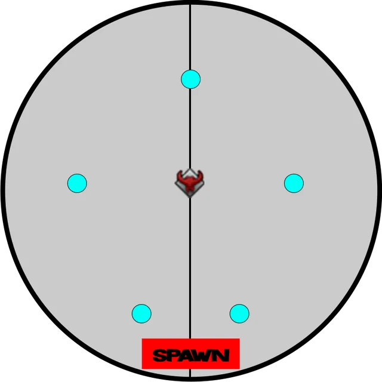

Sanctuaire de Ludra Eternal Ludra · premier raid d'Aion 2
Deux mini-boss à 5 joueurs, puis Ludra à 10 en deux phases. Chaque attaque et chaque mécanique avec le clip du jeu, les schémas de placement et une arène 3D pour voir où se mettre.
Le raid se joue à 10 avec 2 700 de gearscore minimum. Rahu et Ketu se font en groupes de 5. Les deux groupes se retrouvent ensuite pour Ludra, un combat en deux phases avec la bascule à 50 %.
Choisis une mécanique sous l'arène. Fais glisser pour tourner la caméra, molette ou pincement pour zoomer. Le bouton « Comparer avec le jeu » ouvre le clip correspondant à côté du schéma.
—Chargement…
Chargement de l'arène…
—
0.0 s
Mortel / très gros dégâtsDégâts / zone qui suitZone sûreZone violetteRougeBleuTank / bloqueurSoin / AèdeDPSClavier : Espace pause · ←/→ ±0,5 s · [ ] mécanique précédente/suivante
Boss 1 · groupe de 5
Rahu
Rahu enchaîne toujours les mêmes attaques dans le même ordre. Les grosses mécaniques tombent à des paliers de PV : plus vous tapez fort, moins vous voyez d'attaques entre elles.
Le cercle violet, toute la fight
À partir du premier laser rouge (80 %), un joueur reçoit un cercle violet qui se remplit autour de lui. Quand il est plein, il faut au moins 2 autres joueurs dedans.
Sinon une flaque violette apparaît : gros dégâts, ralentissement, et elle grandit avec le temps. À la 3e flaque, le boss one-shot toute la carte.
StratégieAède, Clerc, Tank et 2 DPS, stackés à 5 en permanence. Avec cette compo vous encaissez toutes les attaques, et le stack règle à lui seul le stack rouge et le cercle violet.
Erreur classiqueBeaucoup de joueurs meurent en voulant tout esquiver. Sur le Cross, celui qui esquive la 1re croix se jette souvent dans la 2e. Mieux vaut encaisser un coup et ne pas bouger.
Attaques de base
dans l'ordre du cycle
Boss 2 · groupe de 5
Ketu
Même logique de cycle que Rahu. La mécanique principale revient à 80 % et 50 %, puis la Last Mech à 20 %. Il faut un bon soigneur, idéalement accompagné d'un Aède.
Placement pour la mécanique principale
Deux joueurs prennent la droite, deux la gauche, et un le fond de la carte (en regardant vers le spawn).
CompoAède, Clerc, Gladiateur et 2 DPS distance. Le tank n'est pas indispensable mais aide. Le Rôdeur peut gérer une mécanique seul : pratique, pas obligatoire.

Placement des 5 joueurs · schéma guidemmo.com
Attaques de base
dans l'ordre du cycle
Boss final · 10 joueurs · 100 → 50 %
Ludra phase 1
Un combat long en deux phases. Avec beaucoup de dégâts, on saute une partie des attaques. Tant que Ludra n'est pas à 50 %, il refait la mécanique de l'œil rouge en boucle.
Attaques de base
phase 1
Boss final · 10 joueurs · 50 → 0 %
Ludra phase 2
Nouvelles attaques et nouvelles mécaniques, avec des placements fixes : groupe bleu à gauche, groupe rouge à droite. Après le Shugo de 25 %, Ludra passe enragé.
Attaques de base
phase 2
Sources
Crédits
Mécaniques, schémas, images et clips repris du guide Sanctuaire de Ludra d'Iruminati sur guidemmo.com, qui s'appuie sur cette vidéo. Les textes ont été reformulés. Les schémas 3D sont des simplifications pour comprendre les placements.